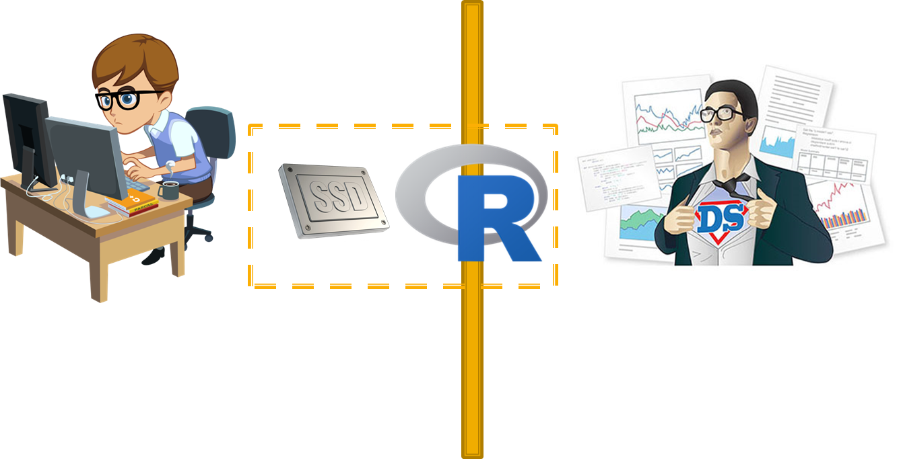
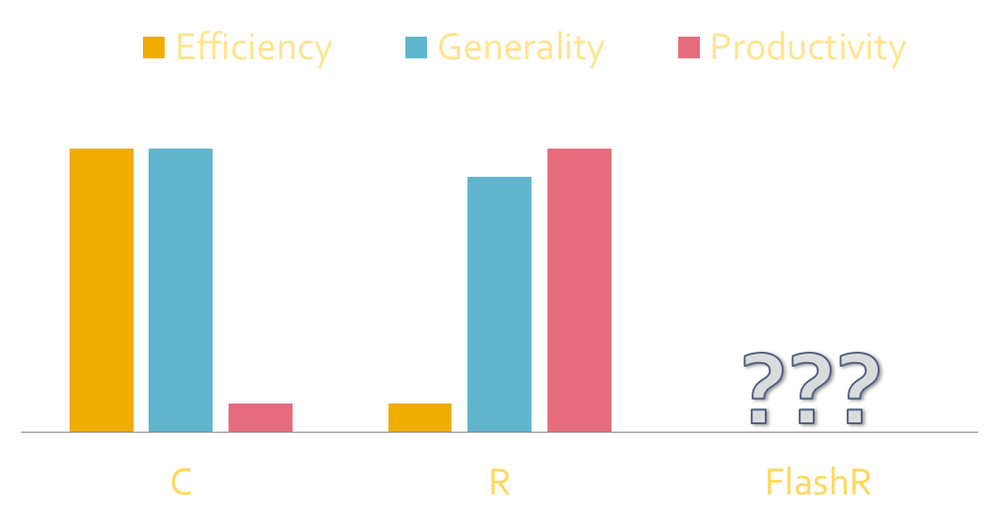
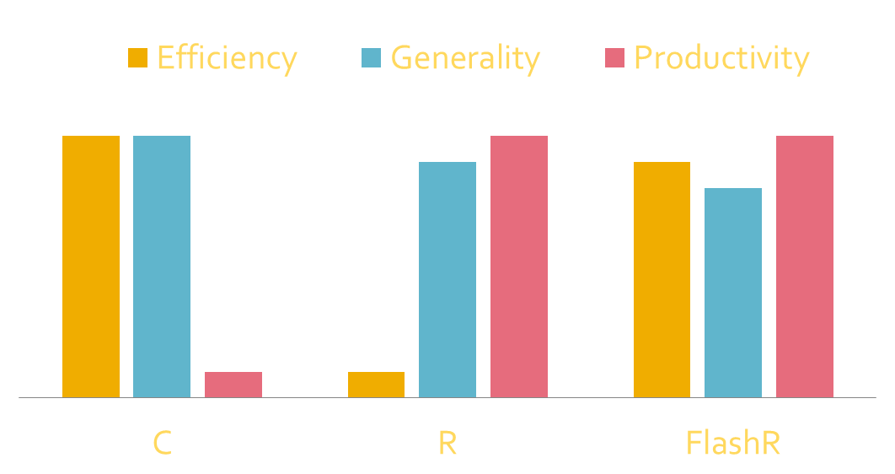
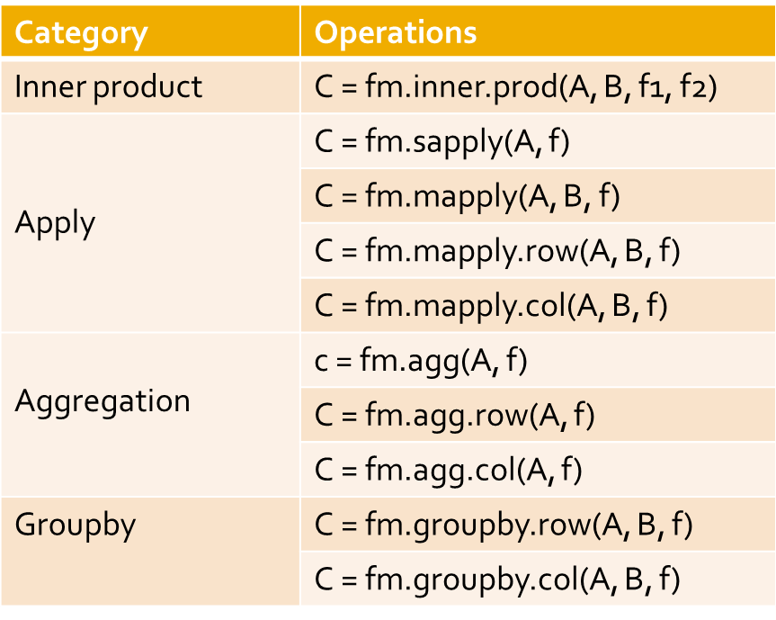
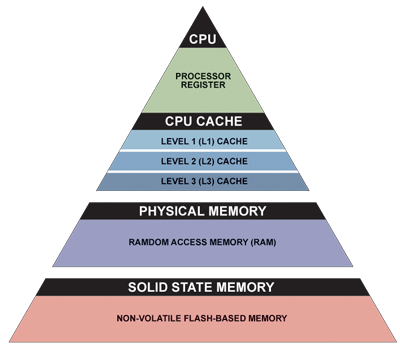
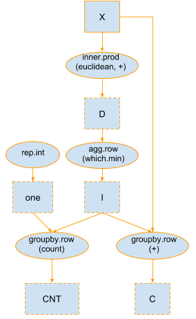
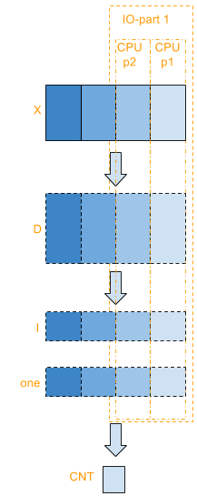
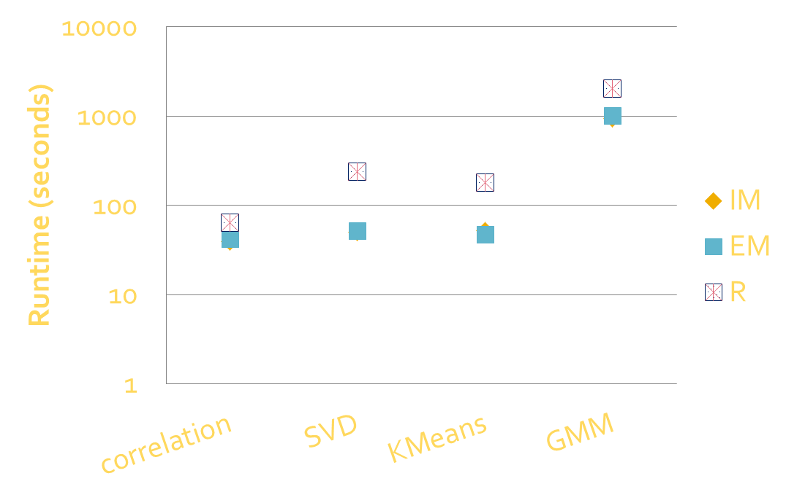
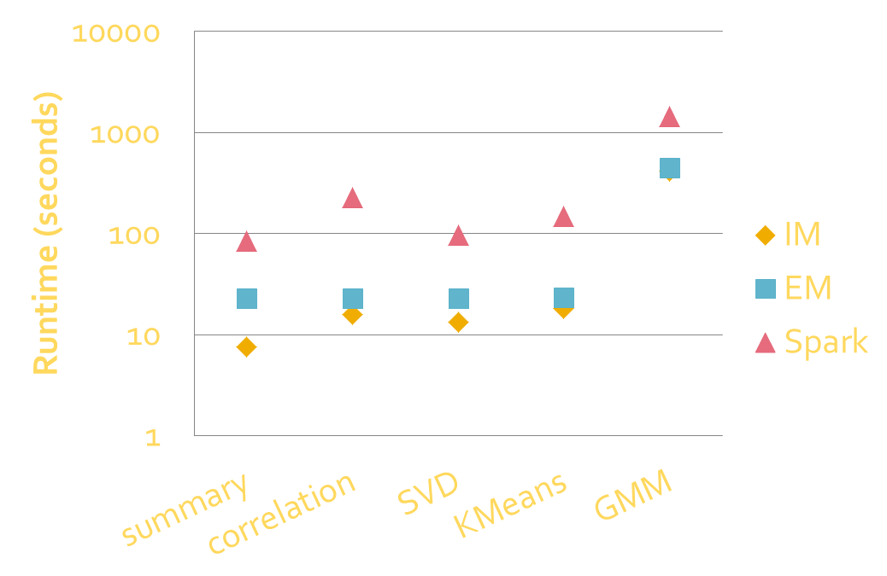
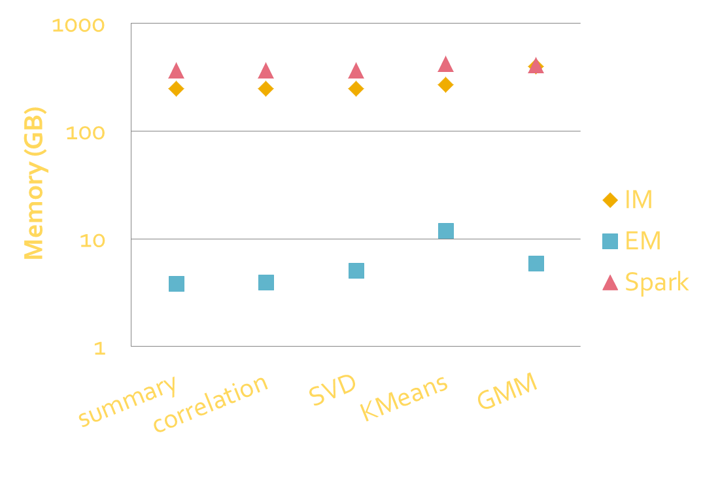

class: center, middle name:opening # [FlashR](http://flashx.io/): ### Enable Parallel, Scalable Data Analysis in R <br> <!-- [prof joshua t. vogelstein](http://jovo.me) --> <br> .center[ **Da Zheng**, Joshua T. Vogelstein, Disa Mhembere, Carey E. Priebe, Randal Burns <br> Johns Hopkins University <br> ] --- # Goals of FlashR <br> - Productivity: high-level programming interface to write data analysis algorithms easily. - Generality: express varieties of data analysis algorithms. - Scalability: process at least terabytes of data. - Computation efficiency: comparable to parallel C code. --- # Motivation <br> - Big data & data science - Large data volumn: terabytes or petabytes - Complex data analysis: statistics & machine learning - Statistics & machine learning - High scalability - High computation efficiency - High programming productivity --- # Motivation <br> - Dilemma 1 - High efficiency + high scalability => low-level programming languages (C/C++). - C/C++ => low programming productivity. - Dilemma 2 - Few system programmers know statistics and machine learning well. - Few statisticians and data scientists know C/C++ or parallel programming well. --- class: middle .center[ ## An ideal solution: ### Domain experts: focus on algorithm design and implementation in a familiar framework. ### System programmers: focus on making the framework run faster. ] <!-- ## Do we have to write parallel C/C++ code to achieve extreme efficiency and scalability? --> --- ## The FlashR realization <br> .center[ </iframe> ] --- ### Challenge #1: achieve generality, efficiency and productivity together. <br> .center[ </iframe> ] --- ### Challenge #1: achieve generality, efficiency and productivity together. <br> .center[ </iframe> ] --- ## GenOps + VUDFs <br> - Generalized matrix operations (GenOps). - Vectorized functions (VUDFs) to operate on matrix elements. .center[ </iframe> ] --- ### Challenge #2: reduce data movement. <br> .pull-left[ - Speed gap between every pair of levels is large. - Speed gap continues increasing in the past decades. ] .pull-right[ </iframe> ] --- ## Lazy evaluation + 2-level partitioning <br> .pull-left[ </iframe> ] .pull-right[ </iframe> ] --- ## R base package <br> - FlashR provides implementations of many matrix operations in the R base package with generalized matrix operations. .pull-left[ R: - +, -, *, /, %*%, ==, !=, >, >=, <, <= - sum, mean, min, max - abs, sqrt, ceiling, floor, round, log, - rowSums, colSums, rowMeans, colMeans ] .pull-right[ FlashR (Base API): - +, -, *, /, %*%, ==, !=, >, >=, <, <= - sum, mean, min, max - abs, sqrt, ceiling, floor, round, log, - rowSums, colSums, rowMeans, colMeans FlashR (Advanced API): - fm.sum, fm.min, fm.max, fm.rowSums, fm.colSums ] --- ## Parallelized correlation with 7 lines of native R code <br> ```R corr <- function(D) { n <- nrow(D) D.sum <- rowSums(t(D)) D2.sum <- rowSums(t(D * D)) D.prod <- t(D) %*% D D.mu <- D.sum / n D.sd <- sqrt((D2.sum - n * D.mu * D.mu) / (n - 1)) ret <- (D.prod - n * D.mu %*% t(D.mu)) / (n - 1) / (D.sd %*% t(D.sd)) } ``` --- ## Parallelized k-means with 8 lines of FlashR code <br> ```R kmeans.iter <- function(X, C){ D <- fm.inner.prod(X, t(C), "euclidean", "+") I <- fm.agg.row(D, "which.min") one <- fm.rep.int(1, nrow(I)) CNT <- fm.groupby.row(one, I, "+") C <- fm.groupby.row(X, I, "+") C <- fm.mapply.row(C, CNT, "/") list(C=C, I=I) } ``` --- ### FlashR outperforms C/FORTRAN code in R with a single thread <br> .center[ </iframe> ] Dataset: 65M samples and 32 features; under a mixture of Gaussian --- ### FlashR outperforms Spark Mllib by almost an order of magnitude <br> .center[ </iframe> ] Dataset: 1B samples and 32 features; under a mixture of Gaussian --- ### EM execution of FlashR has little memory consumption <br> .center[ </iframe> ] Dataset: 1B samples and 32 features; under a mixture of Gaussian --- # Summary <br> - FlashR is a scalable, efficient programming framework for data analysis. - Next steps: - Upload FlashR to CRAN. - Support other R data structures (e.g., data frame). - Extend a machine learning library. --- # Thank you! <br> - FlashX: http://flashx.io/ - Get source code: https://github.com/zheng-da/FlashX.git - Email: dzheng5@jhu.edu - Acknowledgements: This work is graciously supported by DARPA SIMPLEX. <!-- ____ --> <!-- [more slides](http://docs.neurodata.io/ndintro/more.html) -->